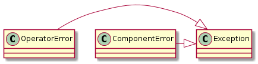
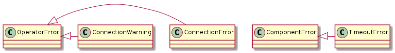
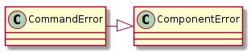
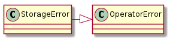
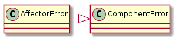
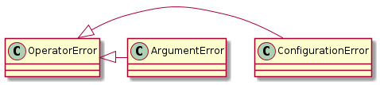

In order to allow the separation of external errors (those which are not caused by the operation of the code itself) a set of unique errors are used so that the TestOperation and Hortator can choose what to catch and what to trickle up. Anything not included here is assumed to be an un-recoverable error and should trigger the CrashHandler.

The OperatorError is the base-class for any error that will kill the Test Operation but can be caught by the Hortator to move on to the next Test Operator (if there is one). It is fatal to a test, but not to all testing.
OperatorError |
An OperatorError should be fatal to the Operator but not to all Operators |
The ComponentError is the base-class for any error that will kill a particular test-run but allows testing to be continued. It will be caught by the TestOperator and the next repetition will continue.
ComponentError |
A component error should be fatal to a test but not the TestOperator |
The Remote-Connection errors are raised if there is a problem communicating with a remote device.
ConnectionError |
A ConnectionError is raised by connections to indicate a problem. |
ConnectionWarning |
A connection warning is a non-fatal connection-related error. |
TimeoutError |
A TimeoutError is a generic Timeout exception to wrap the various timeouts |

The ConnectionWarning is not used and should be removed.
A command error is raised if there was an error executing a command. It does not reflect a problem with the system but is specific to the command that was issued on a device.
CommandError |
A CommandError reflects a problem with the command on the Device-side |

StorageError |
An StoragError is raised by the StorageOutput |

A StorageError is raised if there is a problem sending output to the data-storage. This might also be a Configuration Error, depending on what the cause of the error is, but generally it should be the case that there is something wrong with the system that was not caused by user error.
Affectors are things that affect the state of the hardware infrastructure (e.g. networked power-switches). These are generally harder to anticipate since we are reaching outside the system.
AffectorError |
An Affector Error is raised for non-recoverable affector errors |

These errors are meant for misconfigured configurations or invalid command-line arguments.
ConfigurationError |
A ConfigurationError is raised if there is an error in the configuration file |
ArgumentError |
raised if command-line arguments don’t produce valid output |
